1 Dim plots
Dimensional reduction Plots (DimPlots) are, probably, one of the most iconic visualizations from Seurat. It allows the user to visualize the cells in a dimensional reduction embedding such as PCA or UMAP. The cells can be, then, colored by any desired groups. In short, this visualization allows the user to plot any kind of categorical data onto the cells in the dimensional reduction embedding.
1.1 Basic usage
SCpubr makes use of the default output and Seurat::DimPlot() and further modifies it to achieve the following result.
# Seurat's DimPlot.
p1 <- Seurat::DimPlot(sample)
# SCpubr's DimPlot.
p2 <- SCpubr::do_DimPlot(sample = sample)
p <- p1 | p2
p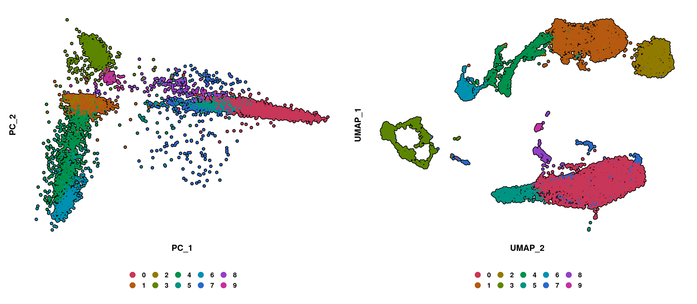
1.2 Modifying axes behavior
Even though axes are removed from UMAP reductions, the title for the axes is kept for any other reduction used. The same is applied for UMAP if the default dimension order is altered.
# Example using PCA reduction.
p1 <- SCpubr::do_DimPlot(sample = sample,
reduction = "pca")
# Example using a non-canonical set of dimensions.
p2 <- SCpubr::do_DimPlot(sample = sample,
dims = c(2, 1))
p <- p1 | p2
p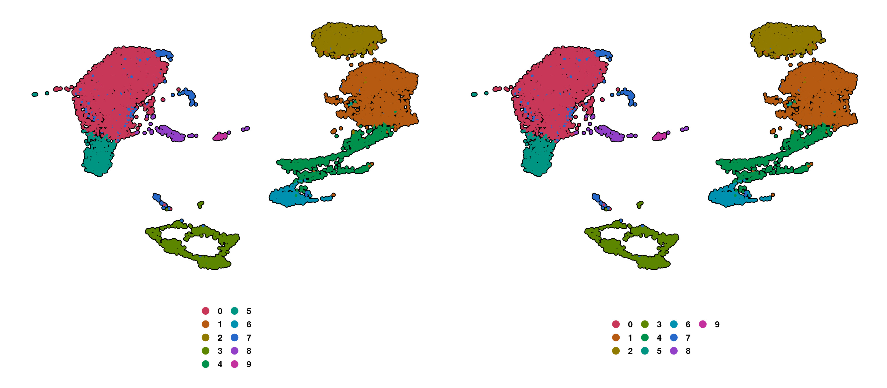
Furthermore, this behavior can be completely cancelled by using plot.axes = TRUE.
# Bring back the Axes.
p <- SCpubr::do_DimPlot(sample = sample,
plot.axes = TRUE)
p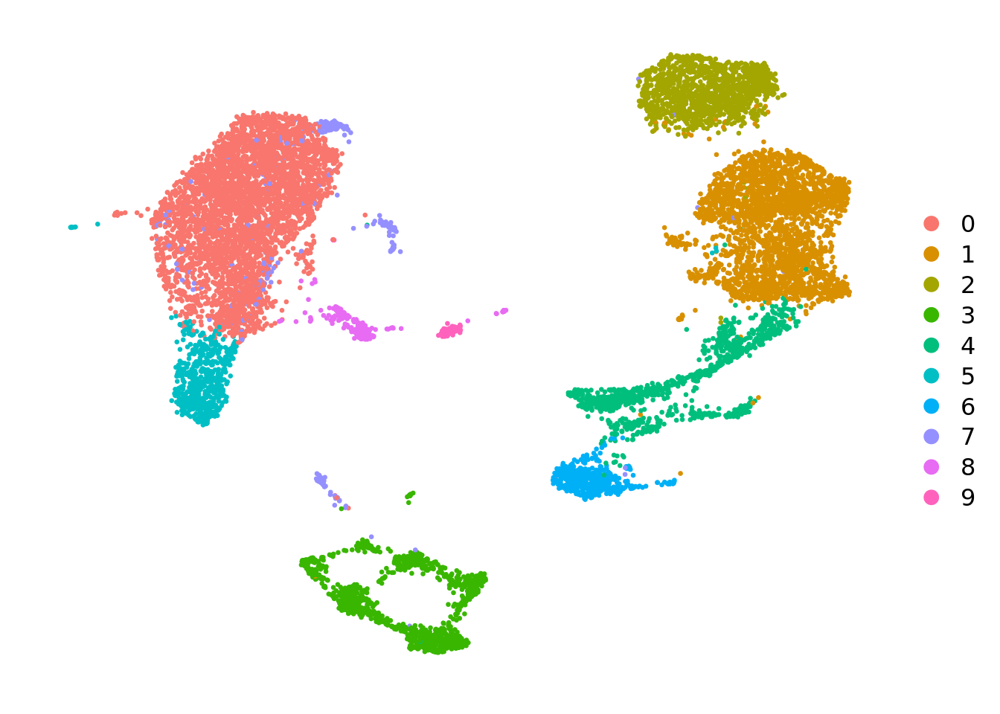
1.3 Modify legend appearance
We can change the legend’s number of columns or rows with legend.ncol and legend.nrow.
# Modify the number of columns in the legend.
p1 <- SCpubr::do_DimPlot(sample = sample,
legend.ncol = 2)
# Modify the number of rows in the legend.
p2 <- SCpubr::do_DimPlot(sample = sample,
legend.nrow = 3)
p <- p1 | p2
p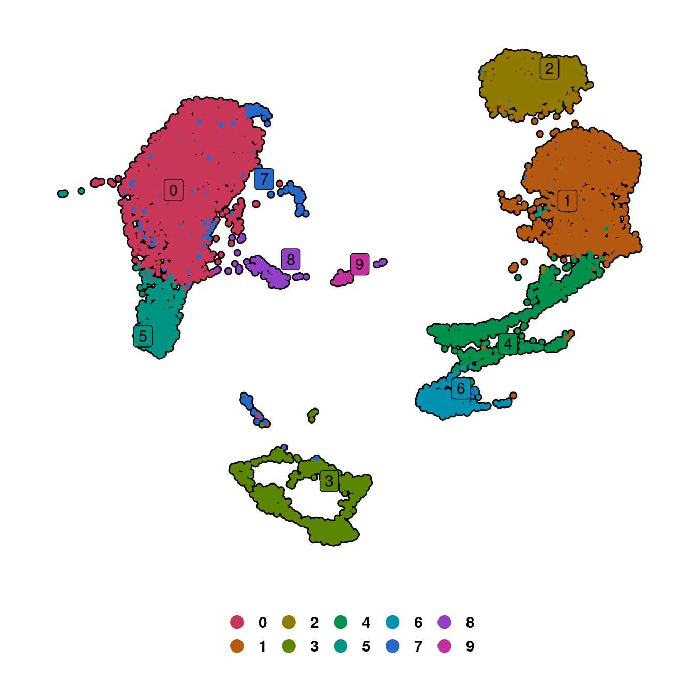
You can also alter how the legend is being “filled” with legend.byrow = TRUE/FALSE. This is, by default the legend items are being placed column-wise. If we set legend.byrow = FALSE, the legend items are placed row-wise.
# Fill the legend by column.
p1 <- SCpubr::do_DimPlot(sample = sample,
legend.byrow = FALSE)
# Fill the legend by rows.
p2 <- SCpubr::do_DimPlot(sample = sample,
legend.byrow = TRUE)
p <- p1 | p2
p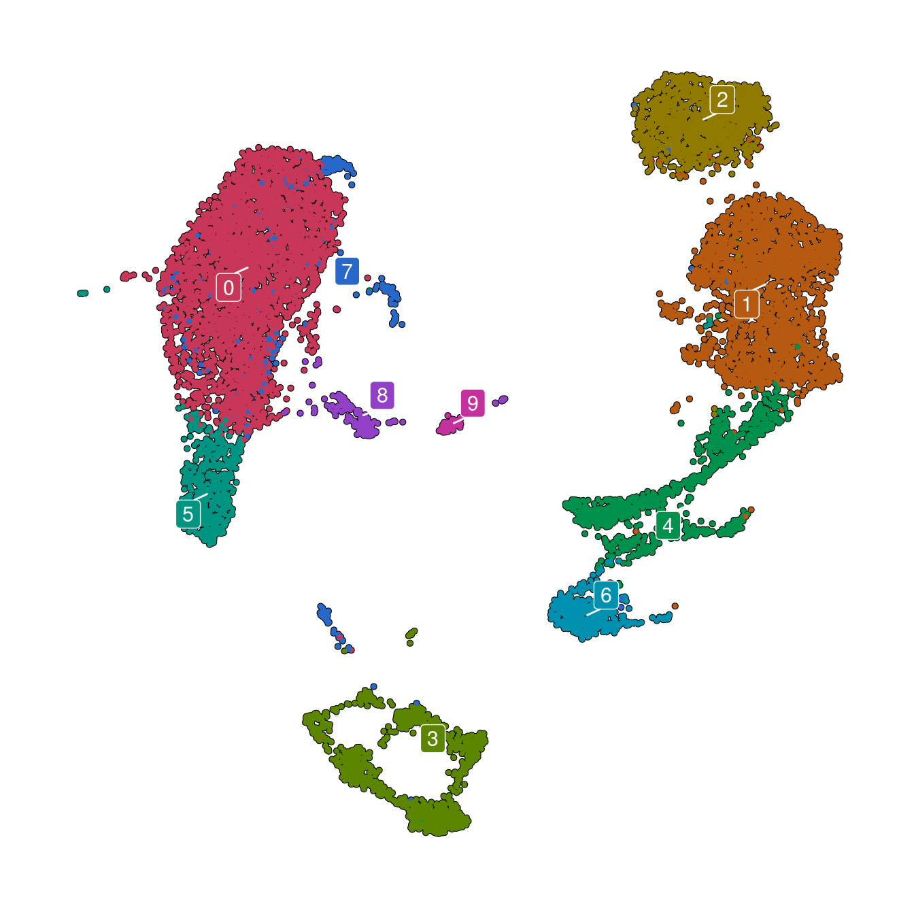
1.4 Label the clusters
In some cases, especially early on in the analysis where we do only have numbers as cluster names, we might want to remove the legend entirely, and instead plot labels on top of each cluster. This is achieved by using label = TRUE.
# Put labels on top of the clusters.
p <- SCpubr::do_DimPlot(sample,
label = TRUE)
p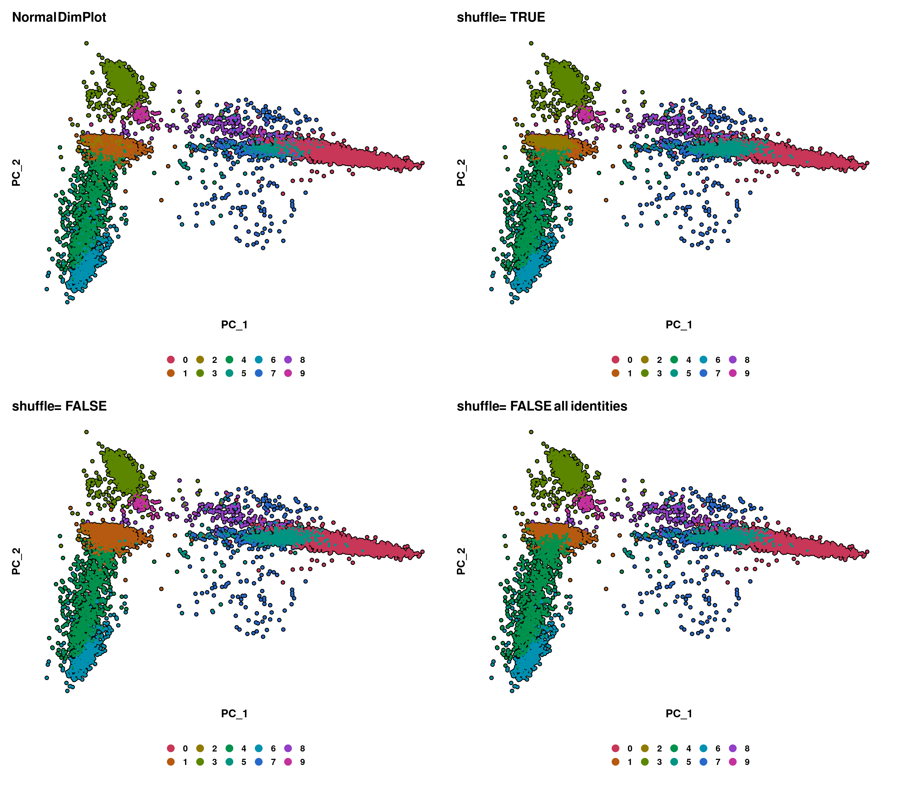
These labels are, in essence the result of applying ggplot2::geom_label() on the plot. However, we might also want to have them as pure text instead of the labels. We can achieve that by providing label.box = FALSE.
# Labels as text
p <- SCpubr::do_DimPlot(sample = sample,
label = TRUE,
label.box = FALSE)
p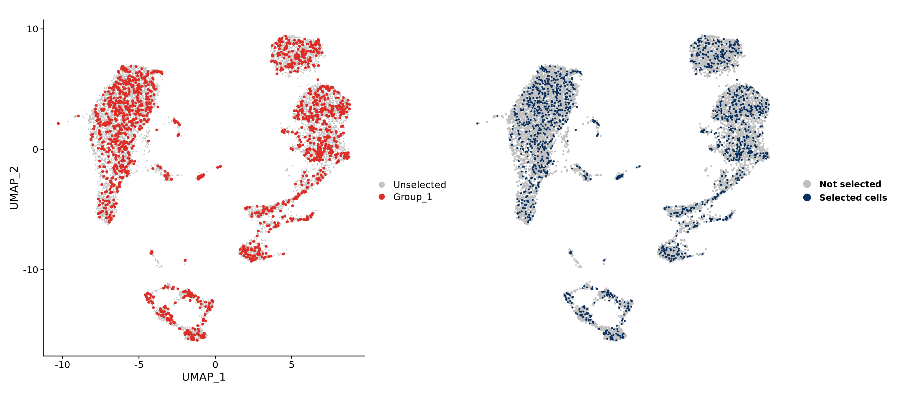
However, we can play further with other parameters of the function such as label.color which will provide a different color for the text inside the labels:
# Change the color of the label text.
p1 <- SCpubr::do_DimPlot(sample = sample,
label = TRUE,
label.color = "black")
# Change the color of the text.
p2 <- SCpubr::do_DimPlot(sample = sample,
label = TRUE,
label.color = "black",
label.box = FALSE)
p <- p1 | p2
p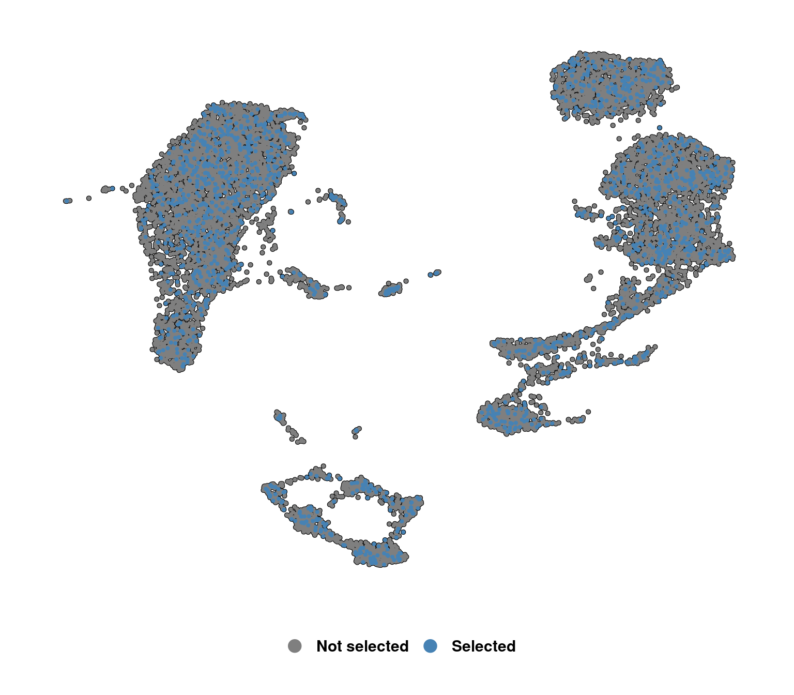
Also, we can modify the size of the labels/text by using label.size paramter:
# Change the size of the label text.
p1 <- SCpubr::do_DimPlot(sample = sample,
label = TRUE,
label.color = "black",
label.size = 6)
# Change the size of the text.
p2 <- SCpubr::do_DimPlot(sample = sample,
label = TRUE,
label.color = "black",
label.box = FALSE,
label.size = 6)
p <- p1 | p2
p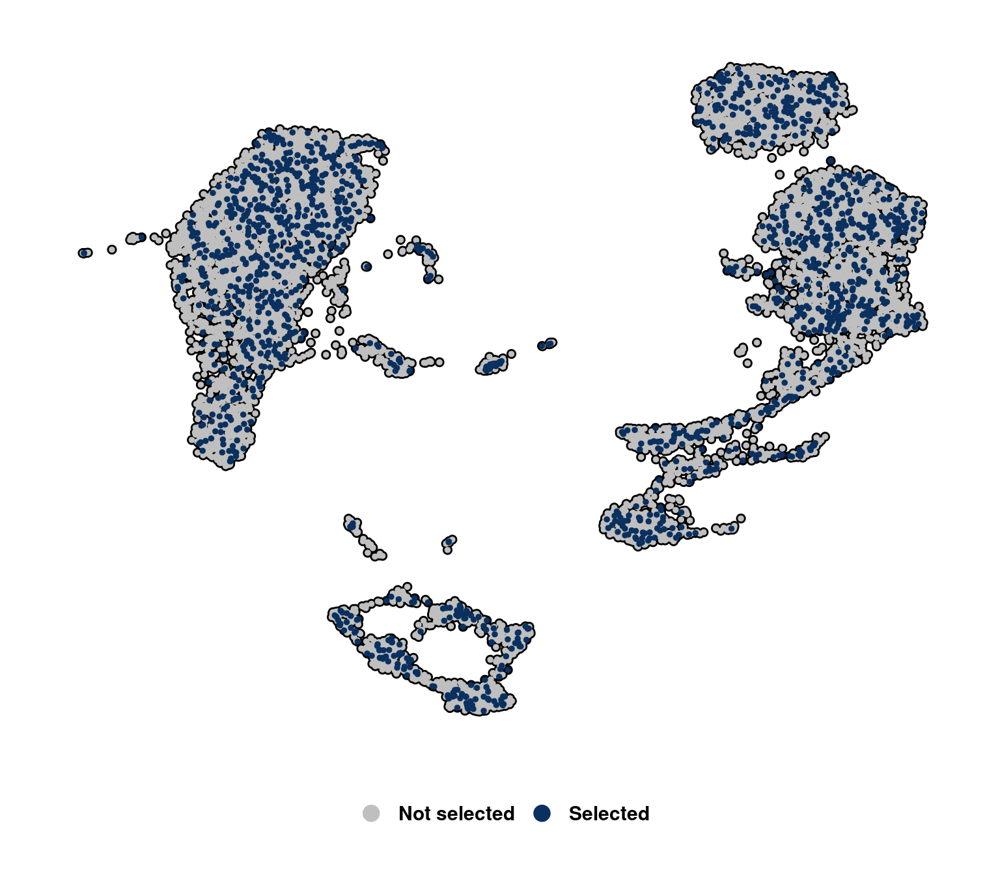
Finally, if the labels/text are overlapping one to another, we can try to fix that by repelling the labels from one to another. We can achieve this by using repel = TRUE:
# Repel the labels.
p1 <- SCpubr::do_DimPlot(sample = sample,
label = TRUE,
label.color = "black",
repel = TRUE)
# Repel the text.
p2 <- SCpubr::do_DimPlot(sample = sample,
label = TRUE,
label.color = "black",
label.box = FALSE,
repel = TRUE)
p <- p1 | p2
p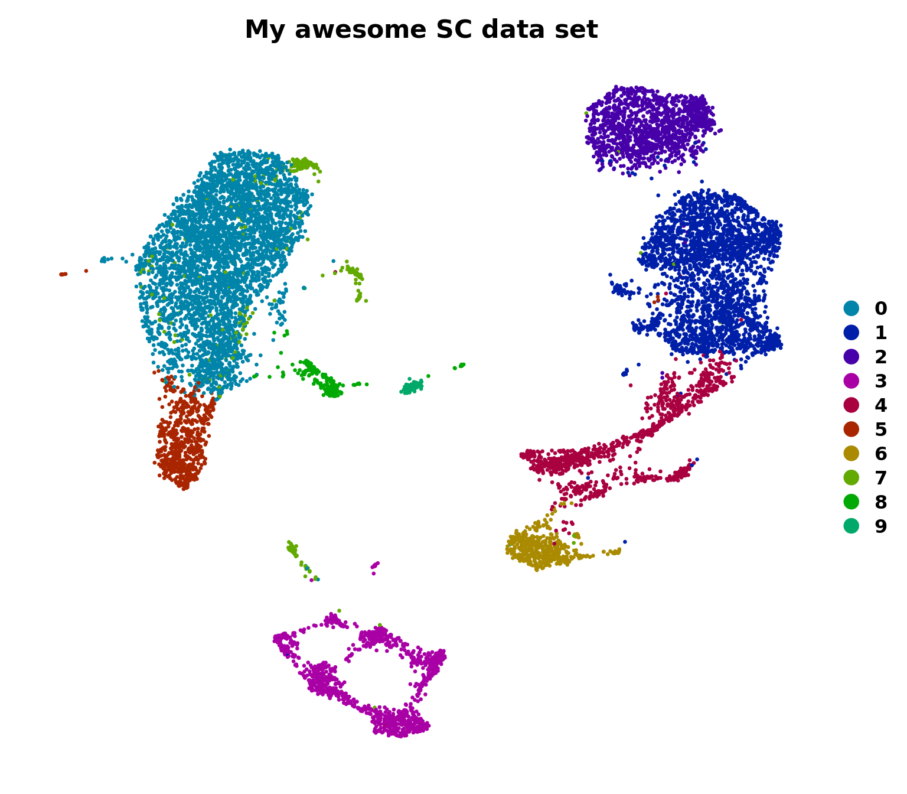
1.5 Legend behavior
Sometimes, the legend is completely redundant, as we are already displaying the same information as labels in the text. Othertimes, we just want to remove it. In any case, this can be achieved by using legend.position = "none".
# Remove the legend from the plot.
p <- SCpubr::do_DimPlot(sample = sample,
label = TRUE,
legend.position = "none")
p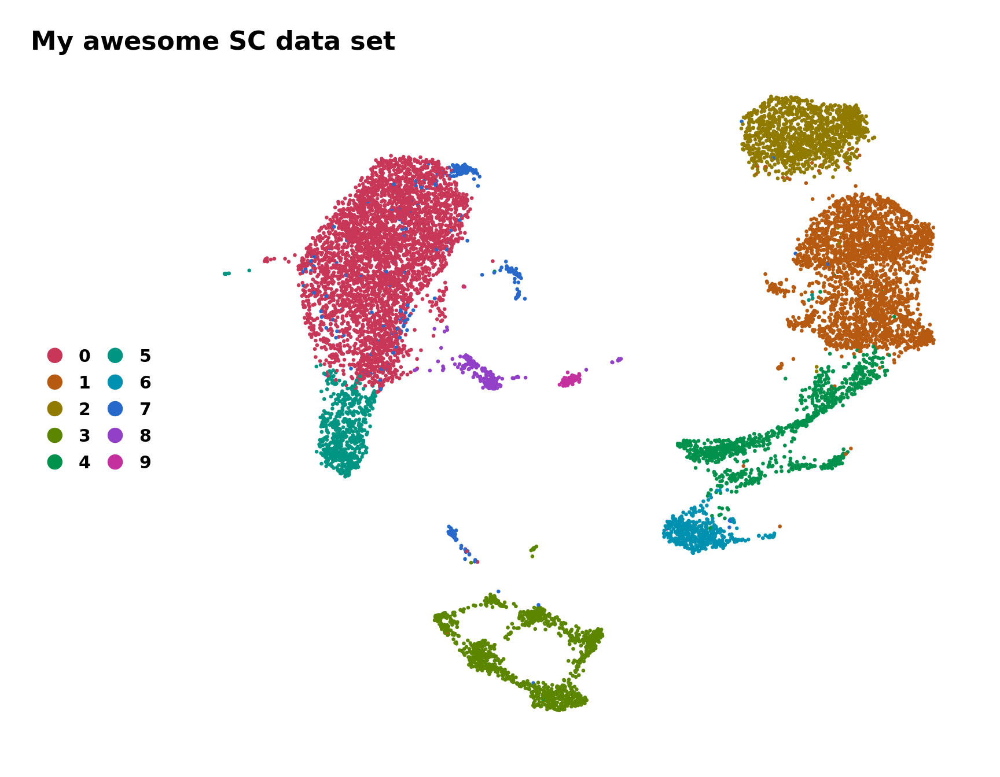
In other cases, we might just be interested in modifying the placement of the legend. This can also be achieved by using legend.position = "bottom/top/right/left":
# Top
p1 <- SCpubr::do_DimPlot(sample = sample,
legend.position = "top")
p2 <- SCpubr::do_DimPlot(sample = sample,
legend.position = "bottom")
p3 <- SCpubr::do_DimPlot(sample = sample,
legend.position = "left")
p4 <- SCpubr::do_DimPlot(sample = sample,
legend.position = "right")
p <- (p1 | p2) / (p3 | p4)
p
Finally, we can add a custom legend title to the plot by using legend.title parameter:
# Add a legend title.
p <- SCpubr::do_DimPlot(sample = sample,
legend.title = "My clusters")
p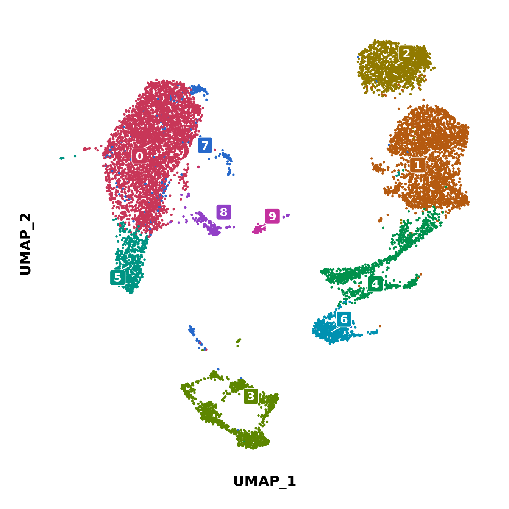
We can also control the position of the legend title by using legend.title.position:
# Top
p1 <- SCpubr::do_DimPlot(sample = sample,
legend.title = "My clusters",
legend.title.position = "top")
# Bottom
p2 <- SCpubr::do_DimPlot(sample = sample,
legend.title = "My clusters",
legend.title.position = "bottom")
# Left
p3 <- SCpubr::do_DimPlot(sample = sample,
legend.title = "My clusters",
legend.title.position = "left")
# Right
p4 <- SCpubr::do_DimPlot(sample = sample,
legend.title = "My clusters",
legend.title.position = "right")
p <- (p1 | p2) / (p3 | p4)
p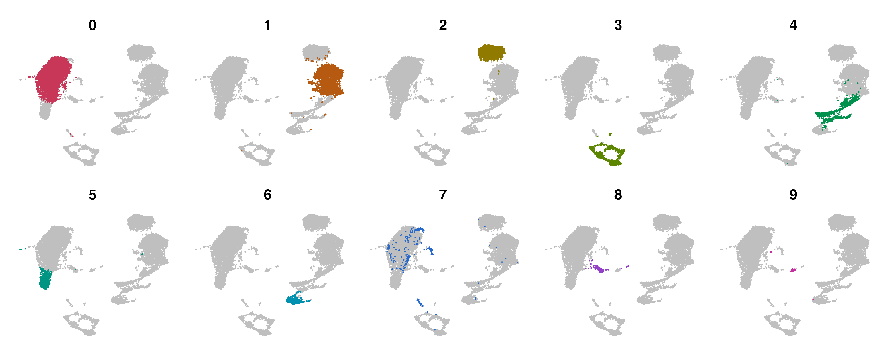
1.6 Changing the order of plotting
By default, cells in SCpubr::do_DimPlot() are randomly plotted by using shuffle = TRUE. This is done as the default behavior of Seurat::DimPlot() is to plot the cells based on the factor levels of the identities. Sometimes, this way of plotting results in some clusters not being visible as another one is on top of it. However, this behavior might be intended, and even more, we would like a specific identity to stand out from the rest. This can be achieved by providing to order parameter either a vector with all the identities ordered however you want, or just some of the identities, which will then be plotted on top of the rest. However, it is still not clear whether using order alongside shuffle = TRUE have unexpected side effects. For this, please use it alongside shuffle = FALSE. For the following example, we are going to test:
- We are going to bring cluster 5 to the front.
-
orderwith one value or all values. -
orderwithshuffle = TRUE/FALSE. - We will increase the dot size to better see cells in cluster 7, as this data set has a lack of overlapping clusters..
# Regular SCpubr DimPlot.
p1 <- SCpubr::do_DimPlot(sample = sample,
reduction = "pca",
plot.title = "Normal DimPlot")
# Using order with one value and shuffle = TRUE.
p2 <- SCpubr::do_DimPlot(sample = sample,
shuffle = TRUE,
order = "5",
reduction = "pca",
plot.title = "shuffle = TRUE")
# Using order with one value and shuffle = FALSE.
p3 <- SCpubr::do_DimPlot(sample = sample,
shuffle = FALSE,
order = "5",
reduction = "pca",
plot.title = "shuffle = FALSE")
# Using order with all values.
p4 <- SCpubr::do_DimPlot(sample = sample,
shuffle = FALSE,
order = c("5", "8", "4",
"9", "3", "1",
"6", "0", "7", "2"),
reduction = "pca",
plot.title = "shuffle = FALSE all identities")
p <- (p1 | p2) / (p3 | p4)
p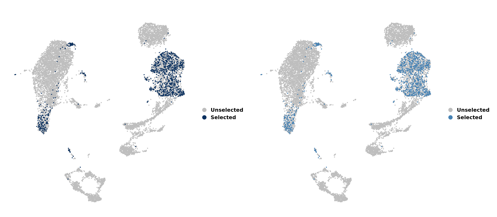
We can see that cluster 5 always plots on top of cluster 0 when order is set. While still not clear how order and shuffle interact, it is apparent that using order cancels the original behavior of shuffle. Therefore, if both order and shuffle are set, SCpubr::do_DimPlot() will throw a warning.
1.7 Highlighting cells
One of the nice features of Seurat::DimPlot() is the possibility of highlighting a certain group of cells in the plot. This is achieved by using the cells.highligh parameter. This is how the default plot looks like and SCpubr::do_DimPlot()’s take on it:
cells.use <- sample(x = colnames(sample),
size = 1500)
# Compare Seurat and SCpubr way of highlighting cells.
p1 <- Seurat::DimPlot(sample,
cells.highlight = cells.use)
p2 <- SCpubr::do_DimPlot(sample = sample,
cells.highlight = cells.use)
p <- p1 | p2
p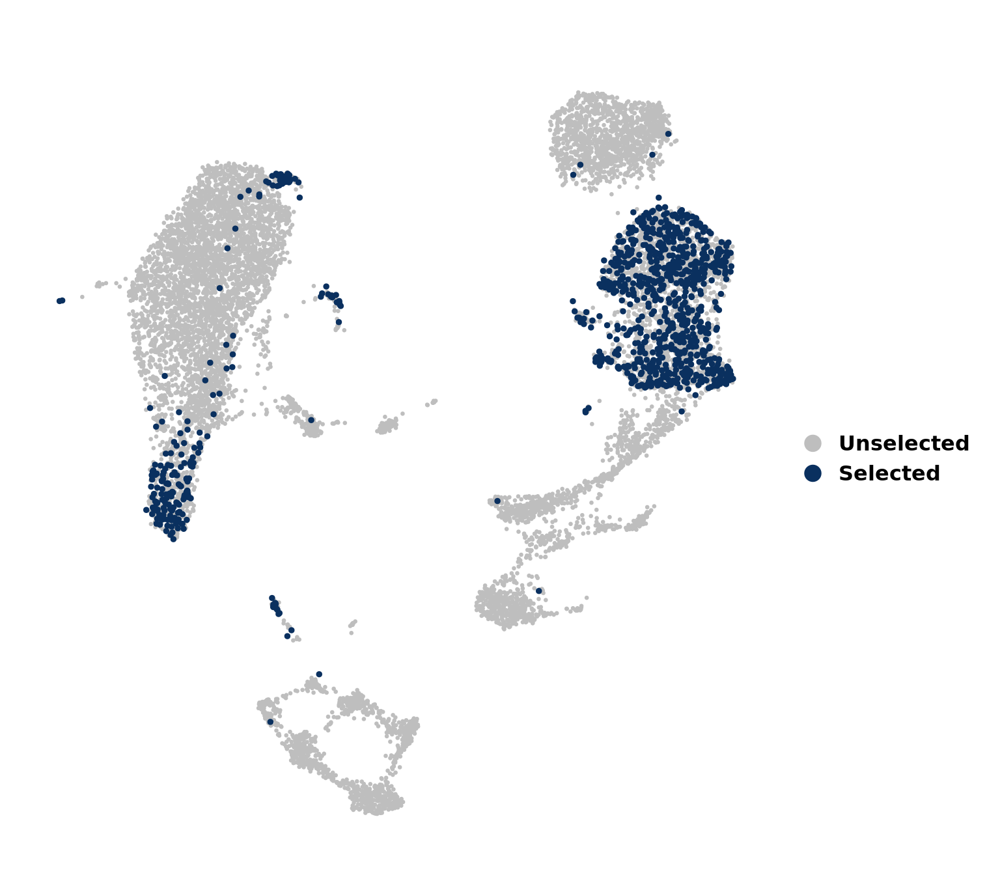
One can also change the color of the highligted cells by providing single color to colors.use and the color of the not selected cells with na.value:
# Change color of highlighted and non-highlighted cells.
p <- SCpubr::do_DimPlot(sample = sample,
cells.highlight = cells.use,
colors.use = "black",
na.value = "grey90")
p
By default, the size of all cells in SCpubr::do_DimPlot() is the same. However, the size of the highlighted dots can be modified with the parameter sizes.highlight.
# Increase the size of the highlighted cells.
p <- SCpubr::do_DimPlot(sample = sample,
cells.highlight = cells.use,
sizes.highlight = 1)
p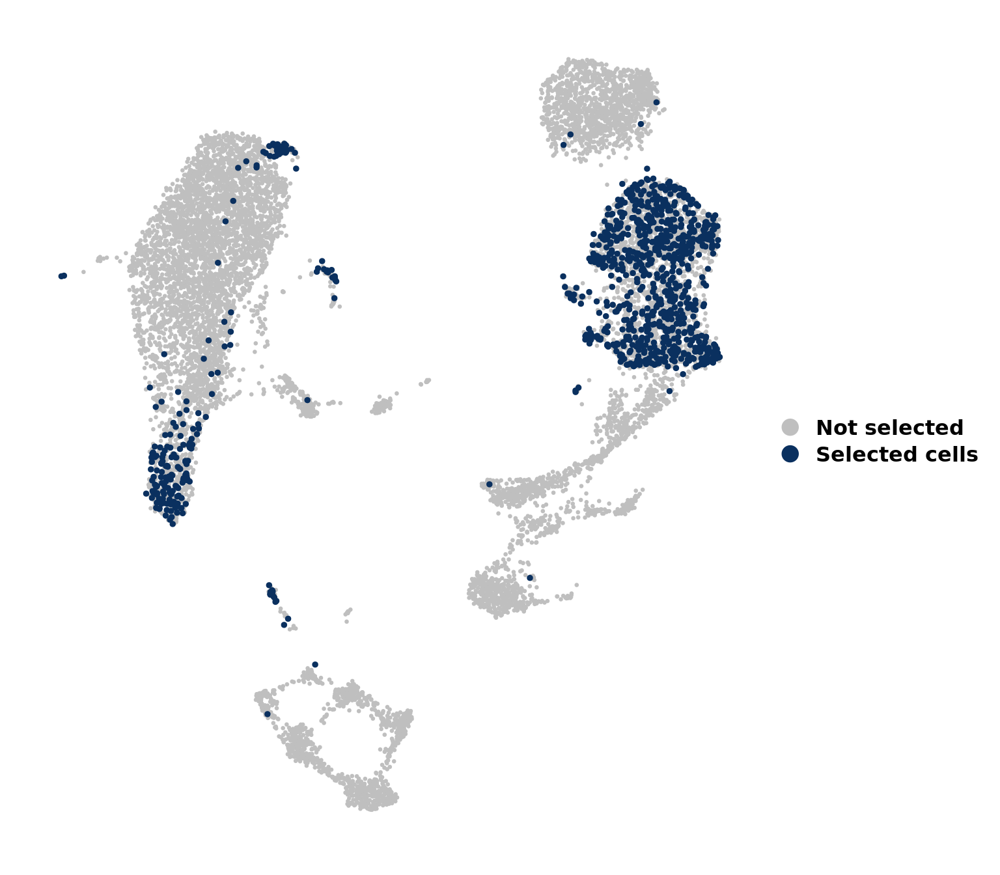
We can also highlight whole identities with idents.highlight parameter. For this, just provide the desired identities to be selected. It can also work in combination with cells.highlight.
# Using cells.highlight.
p1 <- SCpubr::do_DimPlot(sample = sample,
cells.highlight = cells.use)
# Using idents.highlight.
p2 <- SCpubr::do_DimPlot(sample = sample,
idents.highlight = c("6"))
# Using both.
p3 <- SCpubr::do_DimPlot(sample = sample,
cells.highlight = cells.use,
idents.highlight = c("6"))
p <- p1 | p2 | p3
p
cells.highlight and idents.highlight.1.8 Restrict the identitites displayed
Sometimes, we are interested in showing only some of the identities or groups in our sample. Instead of highlighting cells, we still want to keep the original colors and legend. For this use case, one might be tempted to just subset the sample as follows:
# Subset desired identities in a DimPlot.
p <- SCpubr::do_DimPlot(sample = sample[, sample$seurat_clusters %in% c("0", "5")])
p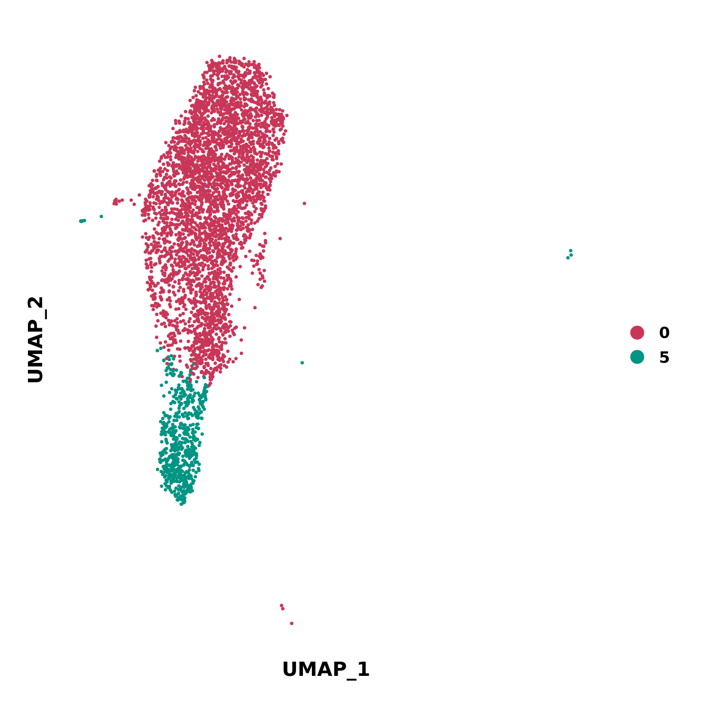
However, we end up losing the UMAP silhouette. For this, SCpubr::do_DimPlot() introduces idents.keep parameter, for which you can provide a vector with the identities you want to keep. This will assign to the rest of the cells a value of NA and they will be colored according to na.value parameter:
# Select identities with idents.keep.
p1 <- SCpubr::do_DimPlot(sample = sample,
idents.keep = c("0", "5"))
# Also, non-selected cells's color can be modified.
p2 <- SCpubr::do_DimPlot(sample = sample,
idents.keep = c("0", "5"),
na.value = "grey50")
p <- p1 | p2
p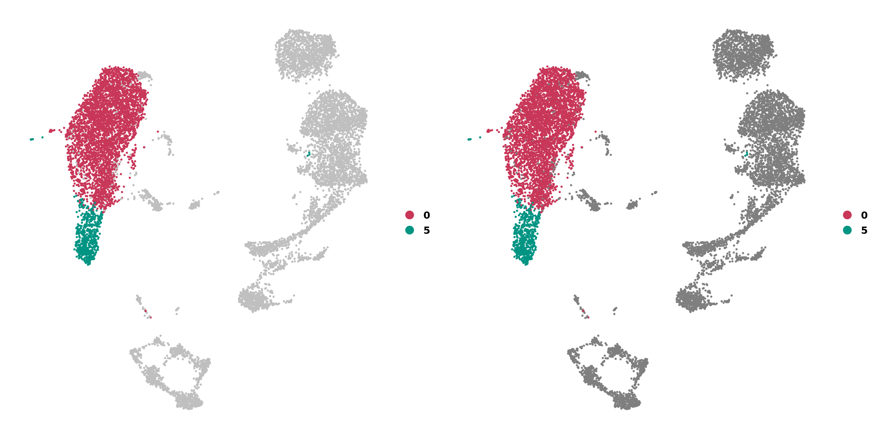
1.9 Group by another metadata variable
So far, all the DimPlots displayed have shown the identities as the ones that are currently set in the object. This can be consulted by using Seurat::Idents(sample). However, naturally, we might want to display different metadata variables. This can be easily achieved by using group.by parameter:
# Generate another metadata variable to group the cells by.
sample$annotation <- sample(c("A", "B", "C"), ncol(sample), replace = TRUE)
# Group by another metadata variable.
p1 <- SCpubr::do_DimPlot(sample,
group.by = "seurat_clusters")
p2 <- SCpubr::do_DimPlot(sample,
group.by = "annotation")
p <- p1 | p2
p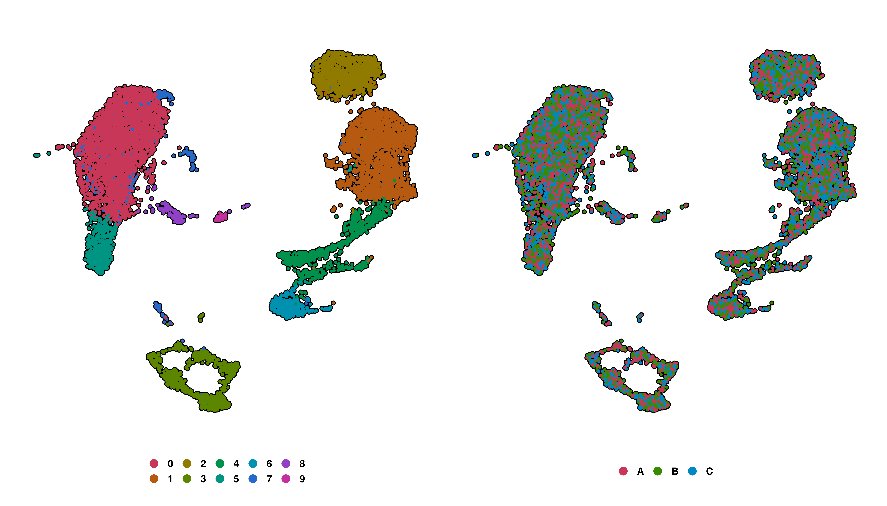
1.10 Splitting by a category
Another useful parameter of Seurat::DimPlot is split.by, which allows you to split your DimPlot into multiple panels, each one containing a different unique value of the metadata variable you have provided to the argument. One can understand this as using the group.by parameter and then splitting the resulting DimPlot into different panels. In this example, we are going to use the different clusters as an example. This is how it looks by default:
# Seurat's DimPlot using split.by
p <- Seurat::DimPlot(sample,
split.by = "seurat_clusters",
ncol = 5)
p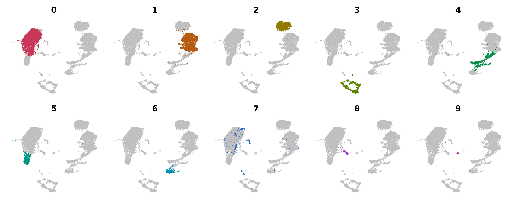
split.by in Seurat.As can be observed, this plot accomplish the task of separating the cells into each panel, but the approach followed actually makes interpretation difficult. Clusters such as Cluster 9, with fewer cells, tell pretty much nothing. Besides, losing the UMAP silhouette is a major downside of this approach. This is where SCpubr focus on. It generates as many plots as unique values in the metadata to split the plot by, but uses cells.highlight instead, which keeps the rest of cells greyed out according to na.value color. This is how it looks:
# SCpubr's DimPlot using split.by
p <- SCpubr::do_DimPlot(sample,
split.by = "seurat_clusters",
ncol = 5,
legend.position = "none",
font.size = 24)
p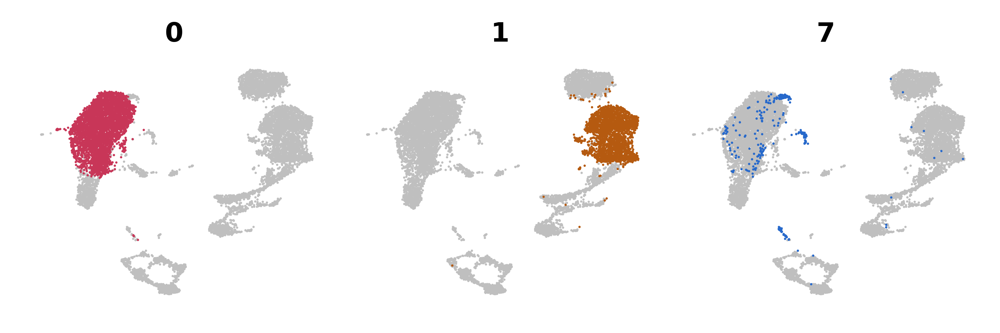
split.by in SCpubr.This way, we can see that clusters such as Cluster 7 are way more disperse than the rest, accounting not only for standalone groups of cells but also blending into other bigger clusters.
If we are interested only in a subset of the possible values, we can use idents.keep alongside a vector containing the values to keep from the unique values in split.by:
# Using split.by and restricting the number of output plots with idents.keep.
p <- SCpubr::do_DimPlot(sample,
split.by = "seurat_clusters",
ncol = 3,
idents.keep = c("0", "1", "7"),
legend.position = "none",
font.size = 24)
p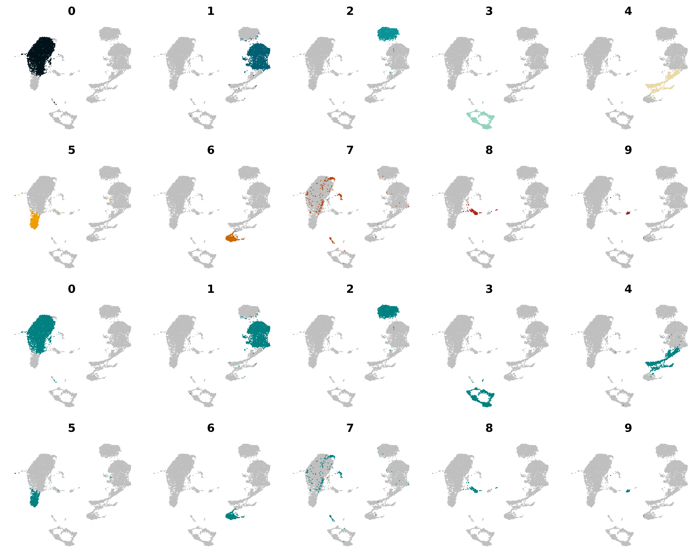
1.11 Group by a variable but split by another
Finally, but also importantly, users might want to split the UMAP using split.by, while also grouping (coloring) the values by another variable using group.by. Using these two parameters in combination yields the following:
# Using split.by and group.by in combination.
sample$orig.ident <- sample(c("A", "B", "C"),
ncol(sample),
replace = TRUE,
prob = c(0.05, 0.1, 0.85))
p <- SCpubr::do_DimPlot(sample,
group.by = "seurat_clusters",
split.by = "orig.ident",
font.size = 24)
p
Actually, the user might want to change the color of the highlighted cells in this split DimPlot. This is achieved by using colors.use parameter and providing either a vector of valid color representations of equal length to unique values in split.by or just a single color to use in all panels.
# Create a color scale for the unique values in seurat clusters.
colors <- c("0" = "#001219",
"1" = "#005f73",
"2" = "#0a9396",
"3" = "#94d2bd",
"4" = "#e9d8a6",
"5" = "#ee9b00",
"6" = "#ca6702",
"7" = "#bb3e03",
"8" = "#ae2012",
"9" = "#9b2226")
# Use a custom set of colors, one for each identity.
p1 <- SCpubr::do_DimPlot(sample,
split.by = "seurat_clusters",
ncol = 5,
legend.position = "none",
colors.use = colors,
font.size = 24)
# Use the same color for all identities.
p2 <- SCpubr::do_DimPlot(sample,
split.by = "seurat_clusters",
ncol = 5,
legend.position = "none",
colors.use = "#008080",
font.size = 24)
p <- p1 / p2
p